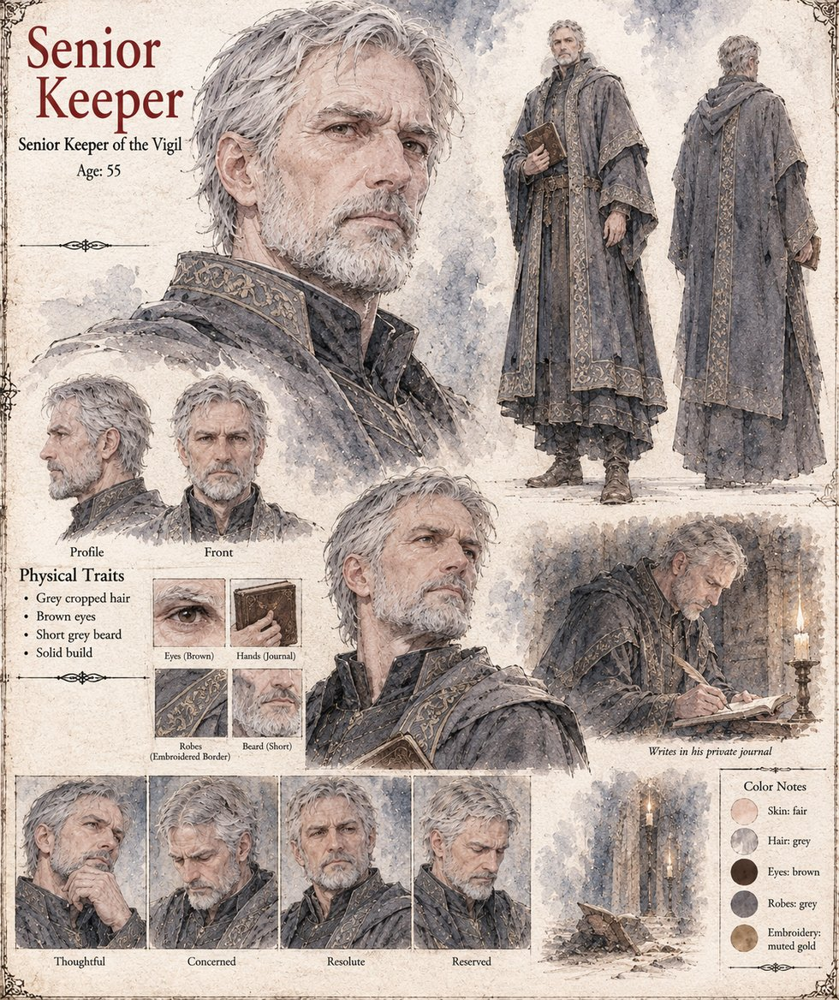

The Senior Keeper (Aveline's Visit)
Senior keeper of the Vigil · 55 years old
The senior keeper of the Vigil on duty the day Empress Aveline comes to Ardenwake within the year of the siege, dressed as a villager and unescorted past the city's outer gate, with exactly one request, made quietly to him and to no one else: that she be permitted to see the woman who broke the eleventh siege. The Anchorite knows her within the first sentence. No keeper is permitted to remain in the room, and what passes in the hour that follows is never recorded. What he does write down, unprompted, in his own private journal rather than the Vigil's official record, is a single line: that the Empress came out wearing the same solemn, unhurried expression every Empress before her, back to the very first, was observed wearing on leaving that hall, a look his own predecessors had recorded across five centuries without once agreeing on what it meant. The journal keeps her own words besides, “My family has been keeping an account of this longer than we generally admit to keeping anything … Thank you for adding to it,” whether he overheard them through a door imperfectly closed or the Empress offered them to him afterward, the record does not say. He never learns about the ledger that explains the look. The manuscript gives him no name, age or description, and does not say whether he is the senior keeper who, after the rout, writes down the anchorite's refusal (the Senior Keeper (After the Rout)).
The sheet gives his age as 55 and draws a solid man with cropped grey hair, a short grey beard, brown eyes and fair skin, in a grey robe with an embroidered border in muted gold over a darker high-collared tunic, with a worn leather-bound journal in his hand. Its expressions are thoughtful, concerned, resolute and reserved, and its panels show him in profile, from the front and from behind, with close studies of the eyes, the hands holding the journal, the border and the beard, and a scene captioned that he writes in his private journal, at a desk by a candle. It also shows an open book lying in a ruin lit by candles. The sheet draws him as a different man from the 58-year-old of the other sheet, who is tall and stooped, with white hair. The sheet prints no culture line.